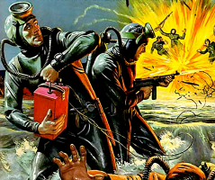
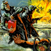
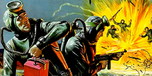
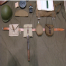

Нж
Название журнала
Краткое содержание журнала в целом, наиболее и наименее интересные темы в общих словах, но не более 110 знаков
подписка на журнал- ЛЕНТА
- ПОРЯДОК
- ЛЮДИ
- ОРУЖИЕ
- ВОЙНА
- АРМИЯ
- ТЕКСТ
- ФОТО
- ВИДЕО
ПОЛИГОН PF DinDisplay Pro Bold 10
записки на военных полях light italic
По
показатель +0057текст 0019 фото 0325 видео 0005
Краткое содержание журнала в целом, наиболее и наименее интересные темы в общих словах, но не более 110 знаков
Заголовок BOLD15PT TRACKING80
PF DinDisplay Pro Light 12pt tracking 80 interligne 15pt победы в Сталинградской битве слетал в Волгоград. Заранее решил выделить время на прогулку по городу и даже составил для себя план мероприятий. Удалось не всё, но тем не менее поделюсь впечатлениями от прогулок по городу. Начну с того чего не получилось. Очень хотел попасть в музей Волгоградского тракторного завода. Даже отправил официальный запрос. Получил вот такой ответ: «В соответствии с установленными в нашем холдинге процедурами обязательного согласования посещения музея Волгоградского тракторного завода организовать срочную экскурсию для корреспондента завтра, 25 января, не представляется возможным». Теперь из того, что успел. Естественно, пошёл в историко-мемориальный музей-заповедник «Сталинградская битва».
Мой сталинград
Накануне годовщины победы в Сталинградской битве слетал в Волгоград. Заранее решил выделить время на прогулку по городу и даже составил для себя план мероприятий. Удалось не всё, но тем не менее поделюсь впечатлениями от прогулок
-
Анонс видеопубликации PF DinDisplay Pro Light 12pt tracking 80 interligne 15pt text centred, max: четыре строки, но не более 135 знаков
Накануне годовщины победы в
- 
Накануне годовщиныпобеды в сталинградской битве слетал в волгоград. заранее решил выделить время на прогулку по накануне не более 140 знаков
-
подводная лодка похожа на женщину своим торпедным люком и склонностью к тайным диверсионным операциям. обе могут уйти на дно месяца на два и там существовать в автономном режиме, ведя скрытную военную борьбу. обе способны утянуть в непроницаемые глубины десятки мужчин и погубить – или уберечь. поэтому, когда женщина отправляется на свою первую подлодку, ей следует быть во всеоружии, как перед встречей с соперницей. К тому же, велик шанс найти там героического мужчину, чьи глаза горят особенно ярко на бледном незагорелом лице, и вызволить его из подводного плена. Но по закону мировой несправедливости, судьбоносные встречи чаще всего происходят в моменты растерянности и наибольшей уязвимости.
-
Заголовок публикации max 2 строки, max 50 знаков
-
НАКАНУНЕ ГОДОВЩИНЫ ПОБЕДЫ В СТАЛИНГРАДСКОЙ БИТВЕ СЛЕТАЛ В ВОЛГОГРАД. ЗАРАНЕЕ РЕШИЛ ВЫДЕЛИТЬ ВРЕМЯ НА ПРОГУЛКУ ПО ГОРОДУ И ДАЖЕ СОСТАВИЛ ДЛЯ СЕБЯ ПЛАН МЕРОПРИЯТИЙ. УДАЛОСЬ НЕ ВСЁ, НО ТЕМ НЕ МЕНЕЕ ПОДЕЛЮСЬ ВПЕЧАТЛЕНИЯМИ ОТ ПРОГУЛОК ПО ГОРОДУ.
АРМИЯпростится
с вещмешками
Все отзывы 519
Александр Рошка
Не успел только потому, что физически не хватило времени. Надеюсь в скором времени опять посетить славный город Волгоград и завершить то, что запланировал и обещал.
Александр Рошка
Не успел только потому, что физически не хватило времени. Надеюсь в скором времени опять посетить славный город Волгоград и завершить то, что запланировал и обещал.
Александр Рошка
Не успел только потому, что физически не хватило времени. Надеюсь в скором времени опять посетить славный город Волгоград и завершить то, что запланировал и обещал.
Александр Рошка
осталось 00045 сек